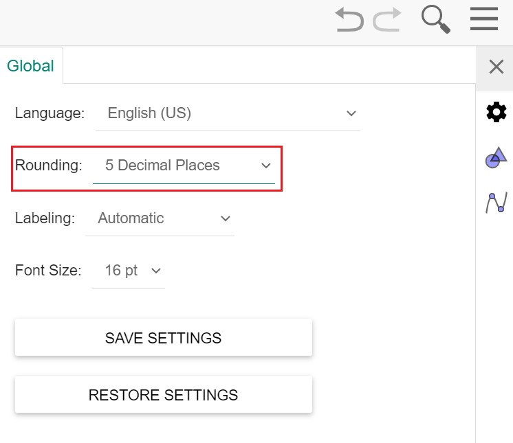

Matlab
Table of Contents
Matlab 相关的笔记。
<!–more–>
Matlab
For
%实例2： 输出1，0.9，。。。。0；这10个数。 for a = 1.0: -0.1: 0.0 % 打印变量 disp(a) end
求矩阵逆矩阵
A=[1 2 3;2 2 1;3 4 3]; inv(A);
画对数函数
\(y = log_2x\)
% 绘制以 2 为底的对数函数 x = 0:100; y = log2(x) plot(y)
同时画多个函数
% 绘制以 2 为底的对数函数 x = 0:100; y1 = log2(x); y2 = x; plot(x,y1,x,y2);
注释
% 逐行注释
%%
这里面的内容都被注释
%%
%{这里面的内容都被注释}%
球面坐标系作图
%% 清除其他窗口 clc; clear all; close all; theta = linspace(0, pi); phi=linspace(0,2*pi); [tt,pp]=meshgrid(theta,phi); r=max(0,5*cos(theta)-4)+max(0,-4*sin(theta-pi)*cos(pi-2.5)-3); [x,y,z]=sph2cart(pp,pi/2-tt,r); %% 绘制mesh %mesh(x,y,z); %% 绘制表面 surf(x,y,z) %% 显示grid grid on;
FFT 分析
实现
%%
%% test.m
%%
clear all
clc
fo = 4; %frequency of the sine wave
Fs = 100; %sampling rate
Ts = 1/Fs; %sampling time interval
t = 0:Ts:1-Ts; %sampling period
n = length(t); %number of samples
y = 2*sin(2*pi*fo*t); %the sine curve
subplot(3,1,1);
plot(t,y)
xlabel('time (seconds)')
ylabel('y(t)')
title('Sample Sine Wave')
grid
subplot(3,1,2);
YfreqDomain = fft(y); %take the fft of our sin wave, y(t)
stem(abs(YfreqDomain)); %use abs command to get the magnitude
%similary, we would use angle command to get the phase plot!
%we'll discuss phase in another post though!
xlabel('Sample Number')
ylabel('Amplitude')
title('Using the Matlab fft command')
grid
axis([0,100,0,120])
subplot(3, 1, 3);
[YfreqDomain, freqRange] = centeredFFT(y, Fs);
stem(freqRange, abs(YfreqDomain));
xlabel('Hz')
ylabel("Amplitude")
grid
axis([-6,6,0,1.5])
%%
%% centeredFFT.m
%%
function [X,freq]=centeredFFT(x,Fs)
%this is a custom function that helps in plotting the two-sided spectrum
%x is the signal that is to be transformed
%Fs is the sampling rate
N=length(x);
%this part of the code generates that frequency axis
if mod(N,2)==0
k=-N/2:N/2-1; % N even
else
k=-(N-1)/2:(N-1)/2; % N odd
end
T=N/Fs;
freq=k/T; %the frequency axis
%takes the fft of the signal, and adjusts the amplitude accordingly
X=fft(x)/N; % normalize the data
X=fftshift(X); %shifts the fft data so that it is centered
end
函数说明
stem
stem stem(Y) 将数据序列Y从x轴到数据值按照茎状形式画出，以圆圈终止。如果Y是一个矩阵，则将其每一列按照分隔方式画出。 stem(X,Y)在X的指定点处画出数据序列Y. stem(...,'filled') 以实心的方式画出茎秆。 stem(...,'LINESPEC') 按指定的线型画出茎秆及其标记
参考资料
- Matlab 进行 FFT 分析 https://www.jianshu.com/p/0c05d99f7e8a
- 如何使用 matlab 进行频域分析 https://zhuanlan.zhihu.com/p/42893470
Mathematica
显示坐标轴
Plot3D[0.5 (1/(E^((1 - x^2)/(x^2 y^2)) x^4 y^2))^0.1, {x, 0, 1}, {y, 0, 1}, AxesLabel -> {x 轴, y 轴, z 轴}]
WolframAlpha
求积分
integrate sin x dx from x=0 to pi
解方程组
0.3290 * w = 1, 0.6400 * r + 0.3*g + 0.15*b = 0.3127*w, 0.3300 * r + 0.6*g + 0.06*b = 0.3290*w, 0.0300 * r + 0.1*g + 0.79*b = 0.3583*w
矩阵运算
// Von Kries
{{0.4002, 0.7076, -0.0808},{-0.2263,1.1653,0.0457},{0,0,0.9182}} * {0.950455, 0.999999, 1.08906}
==> (0.999976, 0.999982, 0.999975)
// CIECAM02
{{0.7328f, 0.4296f, -0.1624f},{-0.7036f, 1.6975f, 0.0061f},{ 0.0030f, 0.0136f, 0.9834f}} * {0.950455, 0.999999, 1.08906}
==> (0.94923 f, 1.0354 f, 1.08743 f)
GeoGebra
常用功能
设置
设置小数点精度

使用
// 设置函数定义域、值域 y=x^(2) (0<x<1) y=x (0<y<1) // 分段函数 y21(x) = if(x<0.3,0,x>0.9,0,(1-j)/x) // 求交点 rts11 = Intersect(y21, x = l) // 获取点的 x 分量 y 分量 x(P) y(P) // 输入无穷大 \infinite
极坐标图像
// 格式： Curve((ρ(θ);θ), θ, α, β) // 实例： Curve((a * 1 + cos²(θ); θ), θ, 0, 2π)
List
// 定义EValueList EValueList = Sequence(-5, 5) // 取List中第i个元素 // Element(EValueList, i) // 取 List 的元素数量 // Length(EValueList) precision = Sequence(Segment((i, 0), (i, 2^(Element(EValueList, i) - 23) * 200)), i, 1, Length(EValueList))
Sequence
生成一系列点
samples = Sequence((k, 0), k, 0.1, 1.9, 0.2)
Vector Matrix
pos = (1,1,1)
matScale = {{rFactor, 0, 0}, {0, gFactor, 0}, {0, 0, bFactor}}
scaledPos = matScale * pos
ERROR
垂线不正确
这是因为 x 和 y 轴的缩放比例不为 1：1 导致的。